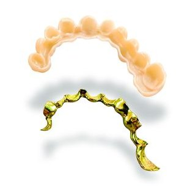

Tipos de barra
Qué barra necesita cada caso.
01

Barra para All-on-4 / All-on-6Refuerzo interno de la arcada completa fija sobre implantes, en titanio anodizado.
TITANIO02 Barra para sobredentadura
Barra para sobredentadura
Barra para sobredentaduraFresada con paredes paralelas y hombros de fricción, con retención por ataches o Locator.
TITANIO03Estructura sobre dientes
Refuerzo fresado para rehabilitaciones fijas dentosoportadas.
CROMO-COBALTO